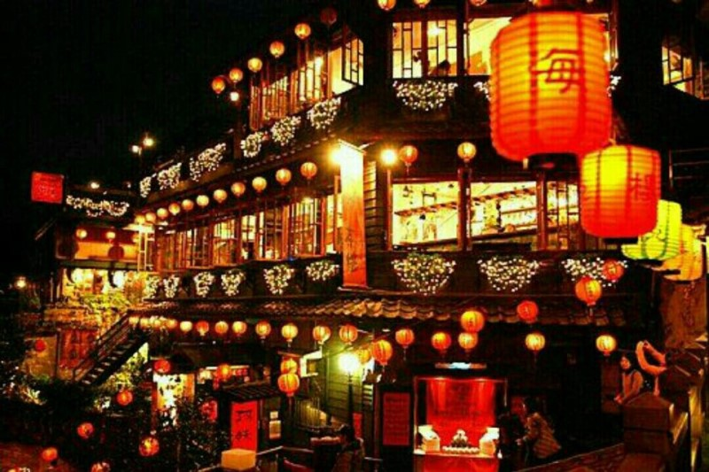
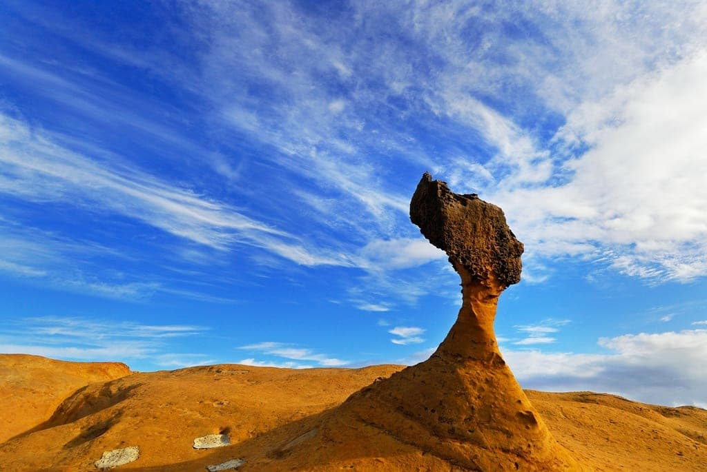
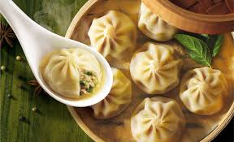
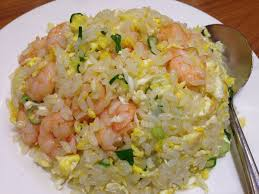
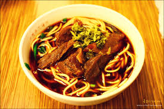

관광지
1. 지우펀

타이베이에서 버스로 약 1시간 20분 거리에 위치한 지우펀은 타이완의 옛 정취를 흠뻑 느낄 수 있는 곳이다.
지우펀은 1920~1930년대 금광 채굴로 번성을 누리던 도시였으나 광산이 폐광된 이후 한적한
시골 마을로 쇠락했다. 하지만 1989년 베니스 국제영화제에서 그랑프리를 수상한 영화
<비정성시(悲情城市)> 촬영지로 다시금 매스컴의 주목을 받았다. 현재는 관광 산업으로
활기를 되찾아 타이베이 근교 여행지로 인기를 누리고 있다. 한국인들에게는 SBS 드라마
<온에어> 촬영지, 일본 애니메이션 <센과 치히로의 행방불명>의 모티브가 된 장소로 유명하다.
구불구불 이어진 비탈길을 따라 늘어선 예스러운 건물들이 눈길을 끈다. 골목마다
묻어나는 낭만적인 정취, 홍등이 빛나는 이국적인 풍경은 타이완 사람들은 물론 관광객들의
마음을 사로잡기에 충분하다. 마치 오랜 옛날로 시간 여행을 떠나 온 듯 이색적인 분위기를
만끽할 수 있다. 웅장하거나 화려한 볼거리는 없지만 미로처럼 엮인 골목과 계단을 느긋한
걸음으로 산책하며 여행 중 호흡을 가다듬기에도 좋은 곳이다.
지우펀에서 가장 번화한 곳은 ‘지산제(基山街)’라는 골목길이다. 산 중턱을 동서로 연결하는
이 길에서 지우펀 여행이 시작된다. 버스 정류장에서 내리막길을 따라 내려오면 왼쪽 편의점
옆에 지산제 입구가 있다. 지산제에는 아기자기한 기념품이 가득한 가게와 음식점, 카페 등이
줄줄이 늘어서 항상 사람들로 북적인다. 이곳의 명물로 통하는 샤오츠, 땅콩 아이스크림, 꼬치구이,
위위안 등을 맛보자. 가격도 저렴해 이것저것 다 맛보아도 부담이 없다.
2. 예류지질공원

타이베이 북부 해안에 위치한 예류는 해수욕장과 온천, 기암괴석으로 유명한 관광 도시다.
특히 희귀한 모양의 바위들이 해안에 모여 있는 예류지질공원은 예류 관광의 필수 코스로 꼽힌다. 이곳의 바위들은
세계 지질학계에서 중요한 해양 생태계 자원으로 평가받는 한편, 푸른 바다와 침식된 산호 조각물들이 함께 어우러져
자연이 그려낸 한 폭의 그림 같은 풍경을 보여 준다. 타이베이에서 당일치기 여행이 가능해 드라이브 코스로도 인기 있다.
작은 곶에 조성된 예류지질공원은 침식과 풍화 작용을 거쳐 자연적으로 형성된 기암을 보러 많은
관광객이 찾는다. 입구를 통과하면 바위들이 늘어선 바닷가가 나온다. 곳곳에 흩어져 있는 기이한
바위들을 바라보면 마치 타임머신을 타고 사차원의 세계에 와 있는 듯 초현실적인 느낌이 든다.
아래가 움푹 파인 버섯 모양 바위가 가장 흔하다.
먹거리
1. 샤오룽바오

2. 새우볶음밥

3. 우육면
